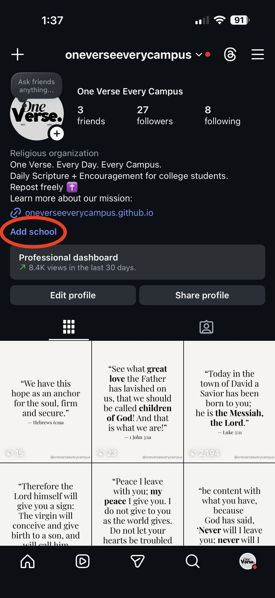
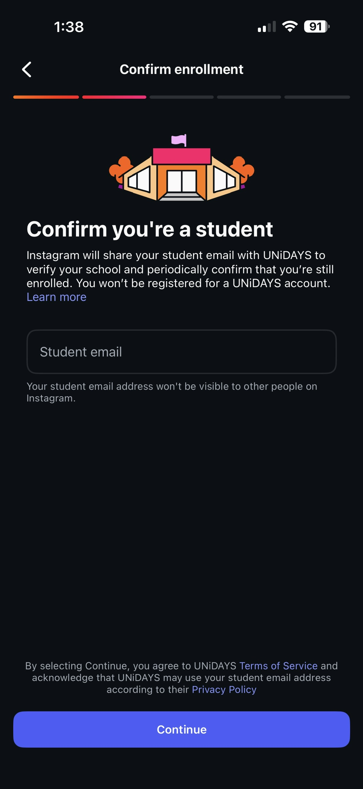
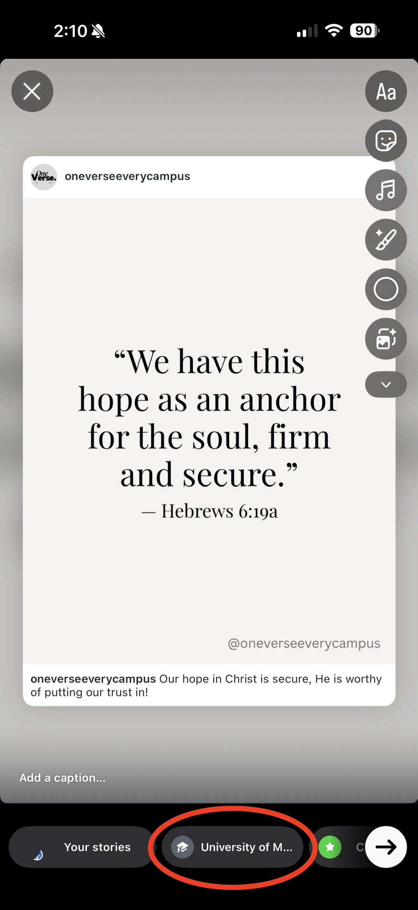

One Verse. Every Campus.
How to Get Involved: Students
As a student, getting involved is easy and pressure-free.
Instagram’s School Stories are shared story feeds that anyone at your college can see once they verify their student status. Adding your school allows you to view and post to your campus’s shared story.
Step 1
Open Instagram and go to your profile. Tap the
Add school button.
NOTE: If you do not see this option, Instagram likely has your account flagged as a non-student, which has no direct fix. Instagram states that teachers, alumni and other adults can't add schools on Instagram.
NOTE: If you do not see this option, Instagram likely has your account flagged as a non-student, which has no direct fix. Instagram states that teachers, alumni and other adults can't add schools on Instagram.

Step 2
Enter your official school email address in the Student email
field to verify your student status.

Step 3
Once verified, you’ll have access to your campus’s shared School Story.
You can repost verses there whenever it feels appropriate by choosing your school's story option when posting a story.
